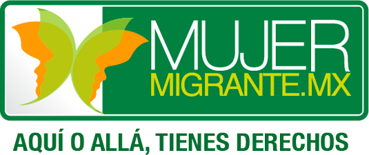

REALIZA TUS ESTUDIOS EN LINEA



Estudiar en línea
La educación en línea es una de las grandes ventajas que ofrecen las tecnologías de información, principalmente el internet. Además de poder mejorar tu preparación desde cualquier lugar y contar con tutora personalizada, realizar tus estudios a distancia te permite administrar tus propios horarios y ritmos de trabajo.

Tips
Estudiar en línea requiere la misma constancia y dedicación que una escuela presencial; si estos consejos para sacar el mayor provecho posible.
- Organízate y asigna el necesario para tus estudios.
- Aprovecha al máximo las nuevas tecnologías.
- Motívate, se constante y paciente.
- Amplia tus conocimientos con fuentes complementarias.
- Has resúmenes para facilitar tus repasos generales.
- Pide asesoría cuando tengas duda.
- Respeta las fechas establecidas en cada calendario.
- Acondiciona un lugar especial para estudiar.
Requisitos
Tener acceso a algunas computadoras, tableta o teléfono inteligente con conexión a internet. Los procesos de registro e inscripción suelen variar en cada instituto educativa, pero alguno se los requerimientos mínimos suelen ser:
- Acta de nacimiento.
- Documento de identidad.
- Certificado escolar de nivel educativo anterior.
- cuenta de correo electronico.

Prepa y bachillerato
Estudiar el bachillerato o preparatoria te permite obtener los conocimientos básicos para continuar tus estudios universitarios o mejorar tus posibilidades laborales.
También existen bachilleratos donde puedes cursar al mismo tiempo una carrera técnica. Conoce aquí algunas de las modalidades virtuales.
Prepa en linea (SEP)
Bachillerato Tecnologico Bivalente a Distancia (IPN)
B@UNAM
Bachillerato General por Areas Interdiciplinarias (UDG)
Univercidad Virtual del Estado de Guanajuato
Nivel superior
Realizar estudios superiores en linea te permite crecer profecionalmente, ademas de combinar el estudio con tu vida personal y laboral. Aqui encontraras algunas opciones de licienciaturas e ingenierias que pudes tomar a distancia despues de haber concuido el bachillerato.
A veces no es sencillo decidir que carrera estudiar. Si este es tu caso, no olides que puedes tomar un test vocacional que te ayude a identificar tus fortalza y aptitudes.